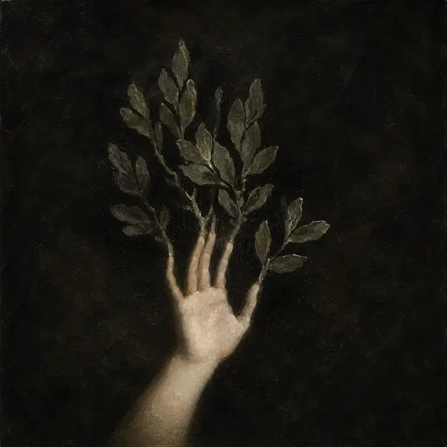

اختلال عدن
سهیل آقایانی
«چه روز قشنگیه، نه؟ آره، میدونم. شاید گفتن این که روز قشنگیه یه کم تکراری باشه. هر روز از روز قبل قشنگتر به نظر میاد. اما شاید این به این معنی باشه که دیروز اصلاً قشنگ نبوده و فقط چون چیز بهتری نمیدونستیم، اون رو زیبا میدیدیم. فردا هم همین حرف رو درباره امروز میزنیم. و این روند ادامه داره تا زمانی که شاید روزی این زیبایی از ما خسته بشه، درهاش رو ببنده، لباسهاش رو بفروشه و بره. و اون موقع ما چی میشیم؟ این همون سوالیه که شبها من رو بیدار نگه میداره، جنگیدن با خوابی که هیچ رؤیایی نداره. ببخشید، من تو رو میشناسم، نه؟ اسمت رو نمیتونم به یاد بیارم.»
شخص دست چپ خود را بر روی سینهی خود میگذارد و کمی سرش را به سمت عقب میبرد و بر اساس ظاهر در هم رفتهی شخص روبهرویش که ابروهایش همچون رنگین کمانی بر زمین خورده، به سمت پایین بود، ادامه میدهد:«اوه! ناراحتت کردم؟ قصد توهین نداشتم. به هر حال همه ما اینجا حکم یه وسیله تزئینی رو داریم، از جمله خودم. رودخونهها، حیوانات، درختا تو خاک، ستارهها تو آسمون. دقیقاً همشون اونجایی هست که قرار بوده باشن. دقیقاً همون کاری میکنن که قرار بوده بکنن. خب البته کم و بیش. این سیب رو ببین! مثلاً. میبینی، اونجا آویزونه انگار که بهش گفته شده. راضی و خوشحاله. اون میتونه برای همیشه اونجا رو اون درخت قشنگ بمونه. خب، ابدیت میآد و میره و همه چیز خوب میمونه. اما سیب میدونه که نباید اونجا بمونه. سیب میتونه بیفته، نمیتونه؟ سیب میتونه سقوط کنه. یه ایده وحشتناک! درخت اونو زنده نگه داشته. سیب بدون اون میمیره. میپوسه و تجزیه میشه و تنها چیزی که ازش باقی میمونه، یه ذره سفت کوچیکه. یه بذر! میدونی بذر چیه، حوا؟» سپس در کف دست خود دانهای را نشان میدهد که خوش چگونه نمایانگر آینده خویش است دانه را ببن انگشتان اشاره و شست خود، و در مقابل چشمان درشت و گرد حوا میگیرد و ادامه میدهد:«میتونی با اطمینان بگی که درون اون بذر، با نوعی فناوری الهی ناشناخته، یه درخت سیب جدید وجود داره. و بعد، حدس میزنم، سیبهای اون درخت میافتن و میمیرن و بذرهای خودشون رو پشت سر میذارن، و قبل از اینکه طول بکشه، در آینده بیشتر از اون چیزی که بتونیم بشمریم سیب داریم. یه باغ کامل. و همه اینها از یه بذر. اما به طور طبیعی سیب، همه اینها رو میدونه. بعد تصمیم میگیره همون جا بمونه، هرگز سقوط نمیکنه، هرگز اجازه نمیده که بمیره. و هیچ چیز تغییر نمیکنه و تبدیل به یه سیب رو درخت تو این باغ میشه. برای همیشه! و خدا رو شکر، چون این یه درخت قشنگه. واقعاً هست. شاید بگی این بهترین درختی هست که وجود داره. کامل از همه لحاظ.»
سپس برای لحظهای به چشمان حوا نگاه میکند. میبیند که چگونه خیره در بحر یک بذر سیب مانده. سپس دانه را بین انگشتان خود خرد و به خاک تبدیل میکند بعد با حالت عصبی به حوا میگوید:«میدونی چیه؟ من معذرت میخوام، این رو اشتباه بیان کردم. حوا! اگه اون سیب رو بخوری، میمیری. نه بلافاصله. اینطوری دروغ میشه. من از دروغ گفتن متنفرم. اما اگر تو سیب رو بخوری، از این باغ بیرون انداخته میشی. از یه بهشت استوایی خارج از تصور هر موجودی که در خدمتت هست به یک باغ میری به نام واقعیت لعنتی. این باغ تو رو زنده نگه داشته. بدون اون، پیر میشی و میمیری و میپوسی. اما مثل یه سیب، یه بذر درون خودت داری.» سپس دستانش را به سوی شکم حوا میبرد و ادامه میدهد:«از اون یه آدم جدید جوونه میزنه. یه نهال، یه کودک که قراره تصویر تو باشه، اما کاملا جدا و مستقل از تو. این همون چیزیه که یه سیب رو میترسونه. چون قراره فرزندت از خودت باهوشتر باشه. فرزندای اونا هم از خودشون. قراره هر نسل از نسل قبل باهوشتر باشه. این درختا انقدر رشد میکنن تا بالاخره یه باغ کامل از شماها داشته باشیم. آره، فرتوت و رنجور میشن و در نهایت میمیرن. اما در این مسیر، اونا ریاضیات رو کشف میکنن، فلسفه رو مینویسن، برق رو بوجود میارن، بنیان گذار دموکراسی میشن، امواج گرانشی رو درک میکنن، از انرژی خورشیدی استفاده میکنن و با انرژی بادی دنیا رو روشن میکنن. از طریق کابلهای برق جهان رو به هم متصل میکنن و شکوه انسانیت رو به نمایش میذارن. به ستارهها دسترسی پیدا میکنن و به سیارههای دیگه سفر میکنن. مرزهای دانش و فناوری رو جابجا میکنن و تو این سفر بیانتها، به دنبال رازهای جهان و نیروهای پنهانش میگردن. این راهیه که تو شروع میکنی. راهی که به انسانیت، آزادی و آیندهای روشن ختم میشه. اونا بالا رو نگاه میکنن، به امید یافتن بهشت. بین زمین و آسمون. به جای اون، آسمون رو پیدا میکنن که همینطور ادامه داره و ادامه داره. اونا اتمها رو میشکنن، به امید یافتن امضای خدا درون اون. اما به جای اون نوترونها و پروتونها رو پیدا میکنن. و درون اونا، کوارکها رو پیدا میکنن. و درون کوارکها، چیز دیگری رو پیدا میکنن. همه مواد تاریک اون، حوا. همه مواد تاریک اون. مرتب شده روی میز کارگاه، در انتظار کشف شدن. یا! یا اینکه سیب همون جا میمونه. هیچ چیز نمیمیره و هیچ چیز تغییر نمیکنه. فقط اون یه سیب رو اون یه درخت برای همیشه میمونه و من نمیگم که این چیز بدیه. این یه درخت قشنگه. شاید حتی زیباترین درخت در اینجا باشه» سرش را به جلو خم میکند و به آرامی در گوش حوا نجوا میکند که:«اما کامل نیست.» با این حرفها، با چشمانی پر از قدرت و عزم، گامی به جلو برمیدارد. دستش را به سمت شاخه دراز کرده و سیب را محکم و با حالتی بینظیر و شکوهمند، میچیند. سیب درخشانی که انگار تمام حقیقتها و دروغها را در درون خود جای داده است. آن را به آرامی در دست میگیرد و به حوا نزدیک میشود. نگاه عمیق و نافذش را به چشمان حوا میدوزد و با صدایی که از اعماق وجودش نشئت میگیرد و میگوید:«حوا، این سیب سرنوشت تو و نسلهای بعد از تو رو رقم میزنه. این لحظه، لحظهایه که تاریخ رو تغییر میده. انتخابش با خودته، موندن در امنیت و سکون ابدی، یا پذیرش تغییر و روبرو شدن با ناشناختههای بیپایان. شجاعت داشته باش و آیندهای روشن رو بساز.»